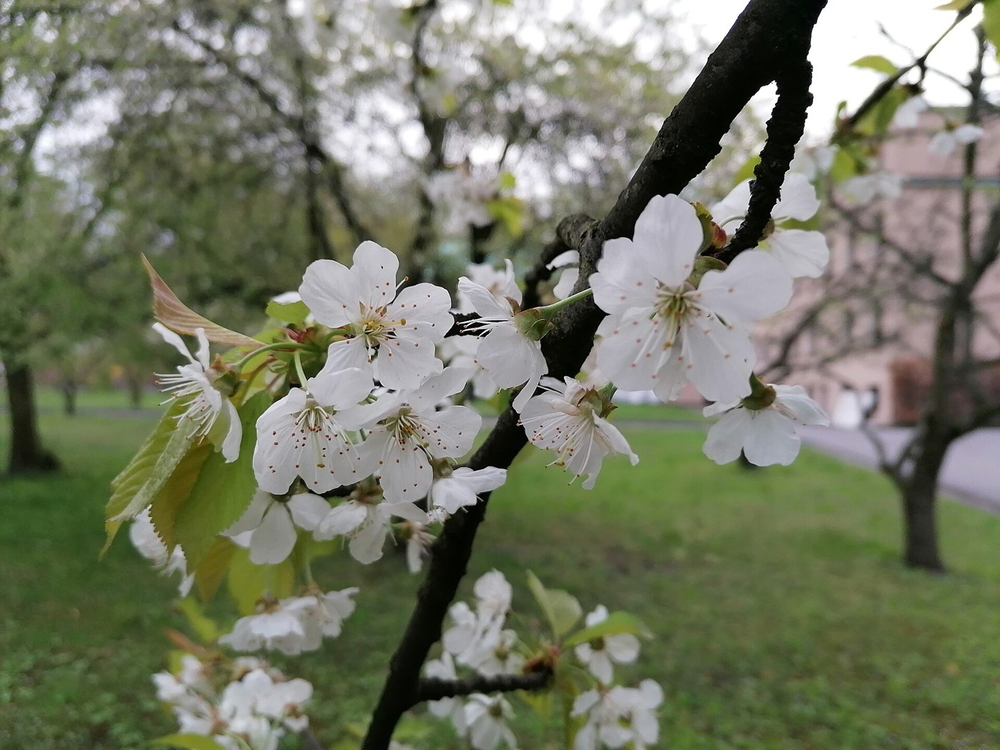
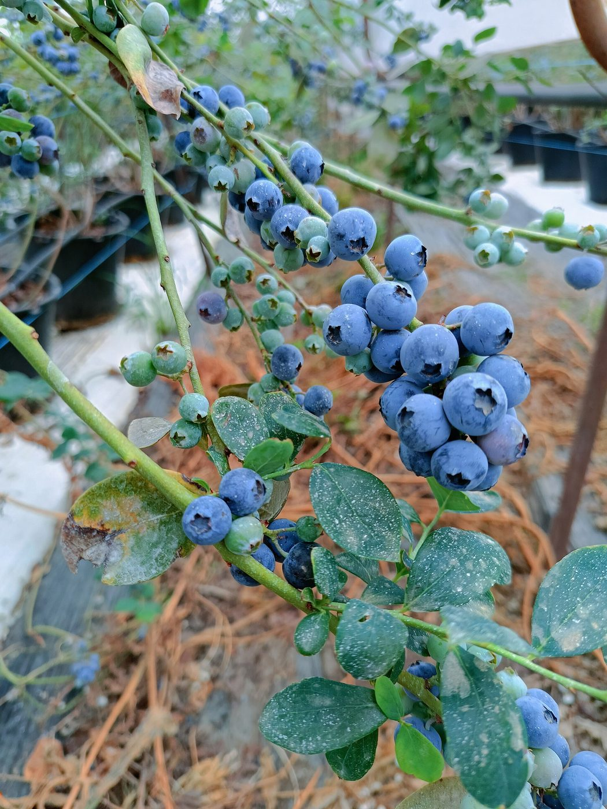
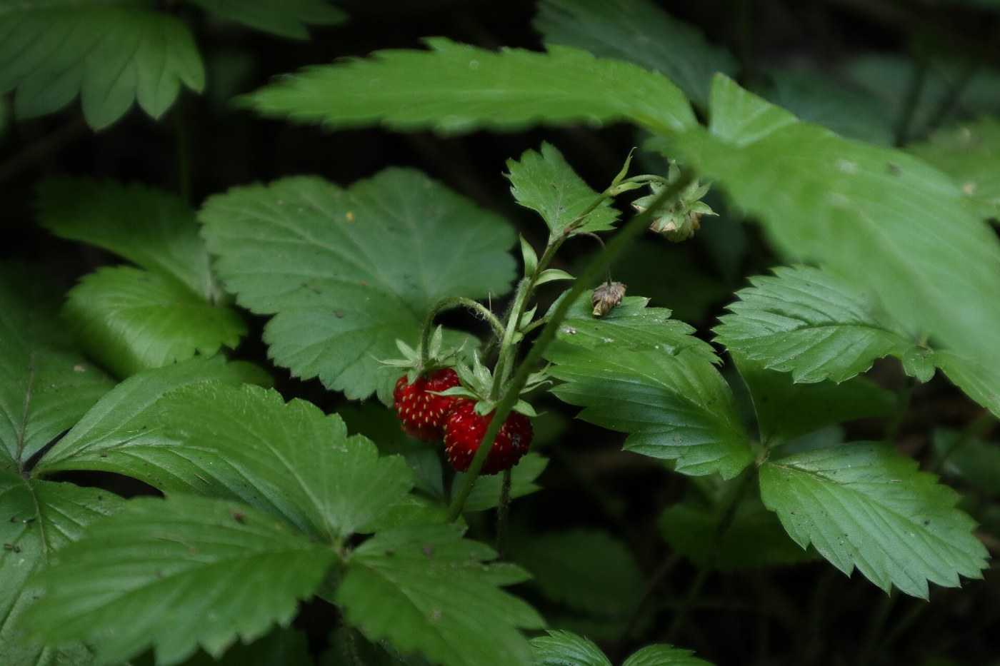
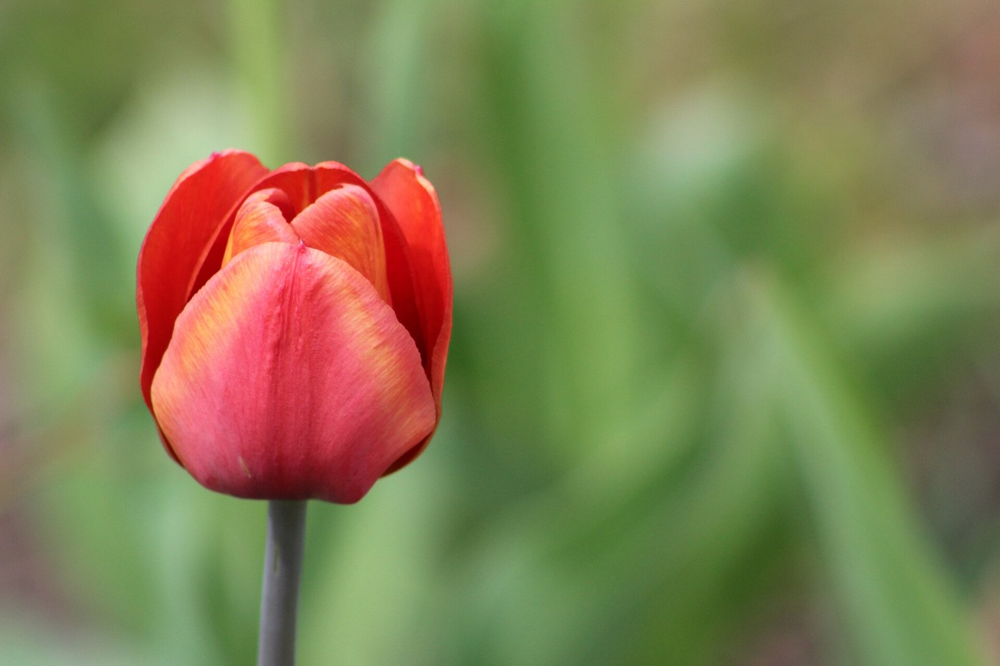
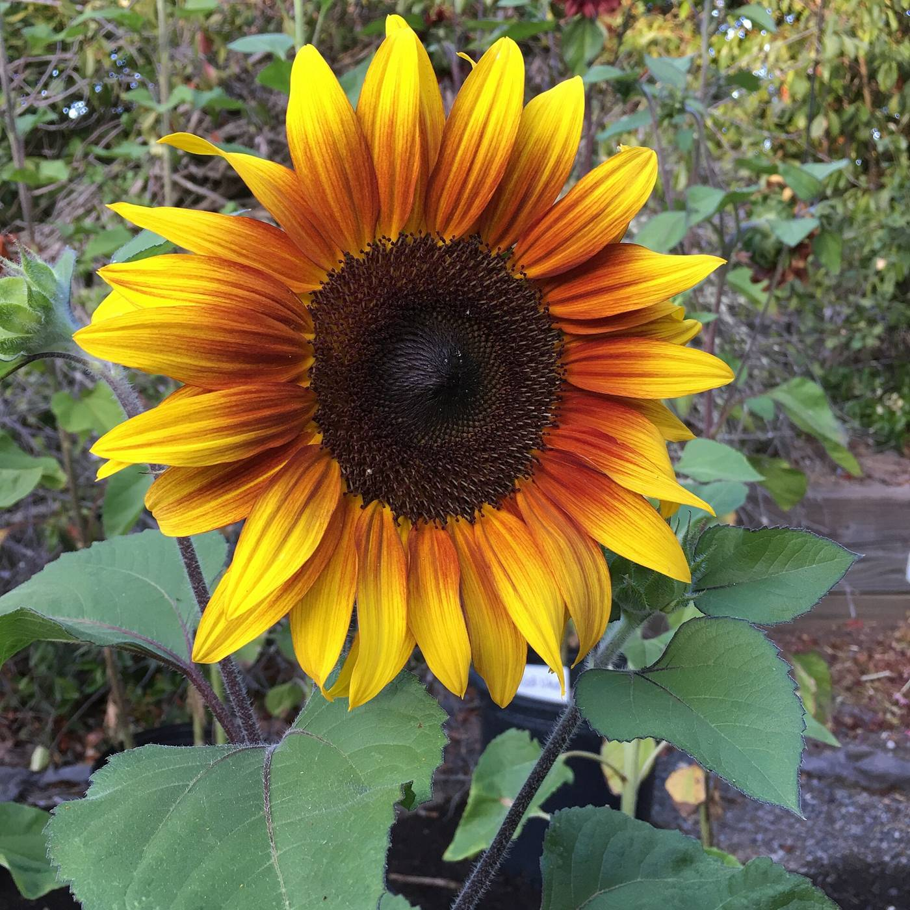
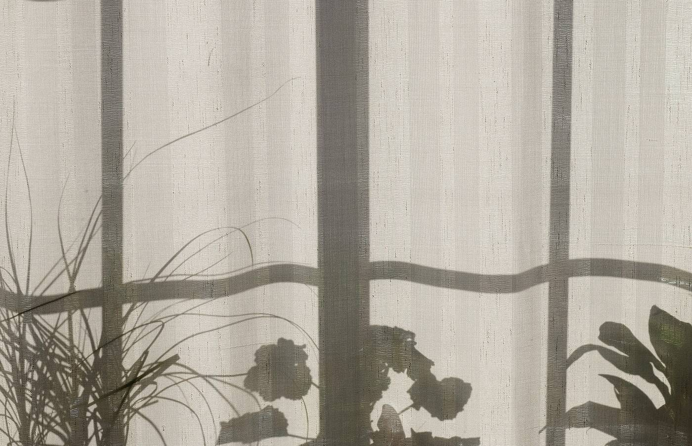

イメージ
焼き菓子
しっとり焼いたやさしい甘さのイメージ
ABOUT
「ほしのほほえみ」は、岩手県一関市藤沢町にあるケーキと焼き菓子のお店です。ご夫婦で営まれていて、2023年8月にオープンしたと、地域のブログ記事に紹介されています。
お客様の声では、シュークリームを「絶品」と評した投稿が見つかります。かわいらしい建物とのぼりが目印との投稿もありました。
店名の由来や込められた想いは、確認できていません。このページの「星」と「ほほえみ」の見立ては、制作側のイメージです。


SWEETS
ケーキや焼き菓子、シュークリームなどを扱うお店です。品ぞろえ・価格・営業時間の詳細は準備中です。下の写真はフリー素材のイメージで、お店の商品ではありません。
しっとり焼いたやさしい甘さのイメージ

木苺をのせた小さなケーキのイメージ

ふんわりクリームのイメージ








メニュー詳細・価格: 準備中
VOICE
以下は制作側が作成した「イメージ例」です。実在のお客様の声ではありません。
シュークリームを食べたら、思わず頬がゆるみました。また買いに行きたいです。
ご来店のお客様(例)手土産に焼き菓子を選びました。やさしい甘さで、渡した相手にも喜ばれました。
ご来店のお客様(例)かわいらしい建物とのぼりが目印で、迷わず着けました。ゆっくり選べて楽しかったです。
ご来店のお客様(例)